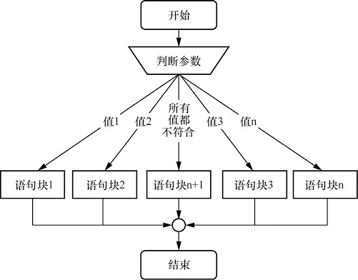
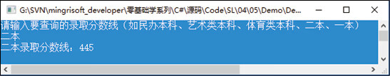
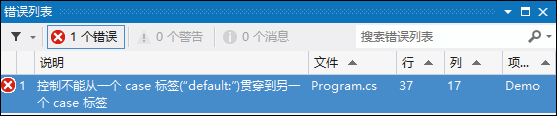

首页 > 编程笔记
C# switch case语句详解
在开发中一个常见的操作就是检测一个变量是否符合某个条件，如果不符合，再用另一个值来检测它，依此类推。当然，这种操作可以使用 if 选择语句完成。
例如，使用 if 语句检测变量是否符合某个条件，代码如下：
为了简化这种编写代码的方式，C# 中提供了 switch case 语句，将判断动作组织了起来，以一个比较简单的方式实现“多选一”的逻辑。
大括号
几点注意事项
switch 语句的执行过程如图1所示。
示例：使用 switch 多分支语句实现查询高考录取分数线的功能，其中：
代码如下：
注意，使用 switch 语句时，每一个 case 语句或者 default 语句后面必须有一个 break 关键字，否则将会出现图3所示的错误提示。
因此，在程序设计中，如果遇到多分支选择，并且判断的条件不是关系表达式、逻辑表达式或者浮点类型的情况，就可以使用 switch 语句代替 if…else if…else 语句，这样执行效率会更高。
例如，使用 if 语句检测变量是否符合某个条件，代码如下：
char grade = 'B';
if (grade == 'A')
{
Console.WriteLine("真棒");
}
if (grade == 'B')
{
Console.WriteLine("做得不错");
}
if (grade == 'C')
{
Console.WriteLine("再接再厉");
}
在执行上面代码时，每一条 if 语句都会进行判断，这样显得非常烦琐。为了简化这种编写代码的方式，C# 中提供了 switch case 语句，将判断动作组织了起来，以一个比较简单的方式实现“多选一”的逻辑。
C# switch case 语句
switch case 语句是多分支条件判断语句，它根据参数的值使程序从多个分支中选择一个用于执行的分支，其基本语法格式如下：
switch(判断参数)
{
case 常量值1:
语句块1
break;
case 常量值2:
语句块2
break;
...
case 常量值n:
语句块n
break;
default:
语句块n+1
break;
}
switch 关键字后面的括号( )中是要判断的参数，参数可以是 sbyte、byte、short、ushort、int、uint、long、ulong、char、string、bool、float、double 或者枚举类型中的一种。大括号
{ }中的代码是由多个 case 子句组成的，每个 case 关键字后面都有相应的语句块，这些语句块都是 switch 语句可能执行的语句块。
- 如果符合常量值，则 case 下的语句块就会被执行，语句块执行完毕后，执行 break 语句使程序跳出 switch 语句；
- 如果条件都不满足，则执行 default中 的语句块。
几点注意事项
- case 后的各常量值不可以相同，否则会出现错误。
-
case 后面的语句块可以有多条语句，不必使用大括号
{ }括起来。 - case 语句和 default 语句的顺序可以改变，不会影响程序执行结果。
- 一个 switch 语句中只能有一个 default 语句，而且 default 语句可以省略。
switch 语句的执行过程如图1所示。

图1：switch语句的执行过程
图1：switch语句的执行过程
示例：使用 switch 多分支语句实现查询高考录取分数线的功能，其中：
- 民办本科分数线为 350 分；
- 艺术类本科分数线为 290 分；
- 体育类本科分数线为 280 分；
- 二本分数线为 445 分；
- 一本分数线为 555 分。
代码如下：
static void Main(string[] args)
{
//输出提示问题
Console.WriteLine("请输入要查询的录取分数线（如民办本科、艺术类本科、体育类本科、二本、一本）");
string strNum = Console.ReadLine(); //获取用户输入的数据
switch (strNum)
{
case "民办本科": //查询民办本科分数线
Console.WriteLine("民办本科录取分数线：350");
break;
case "艺术类本科": //查询艺术类本科分数线
Console.WriteLine("艺术类本科录取分数线：290");
break;
case "体育类本科": //查询体育类本科分数线
Console.WriteLine("体育类本科录取分数线：280");
break;
case "二本": //查询二本分数线
Console.WriteLine("二本录取分数线：445");
break;
case "一本": //查询一本分数线
Console.WriteLine("一本录取分数线：555");
break;
default: //如果不是以上输入，则输入错误
Console.WriteLine("您输入的查询信息有误！");
break;
}
Console.ReadLine();
}
程序运行效果如图2所示。

图2：查询高考录取分数线
图2：查询高考录取分数线
注意，使用 switch 语句时，每一个 case 语句或者 default 语句后面必须有一个 break 关键字，否则将会出现图3所示的错误提示。

图3：缺少break关键字时的错误提示
图3：缺少break关键字时的错误提示
switch 与 if…else if…else 语句的区别
if…else if…else 语句也可以实现多分支选择的功能，但它主要是对布尔、关系或者逻辑表达式进行判断，而 switch 多分支语句主要对常量值进行判断。因此，在程序设计中，如果遇到多分支选择，并且判断的条件不是关系表达式、逻辑表达式或者浮点类型的情况，就可以使用 switch 语句代替 if…else if…else 语句，这样执行效率会更高。
关注公众号「站长严长生」，在手机上阅读所有教程，随时随地都能学习。内含一款搜索神器，免费下载全网书籍和视频。

微信扫码关注公众号